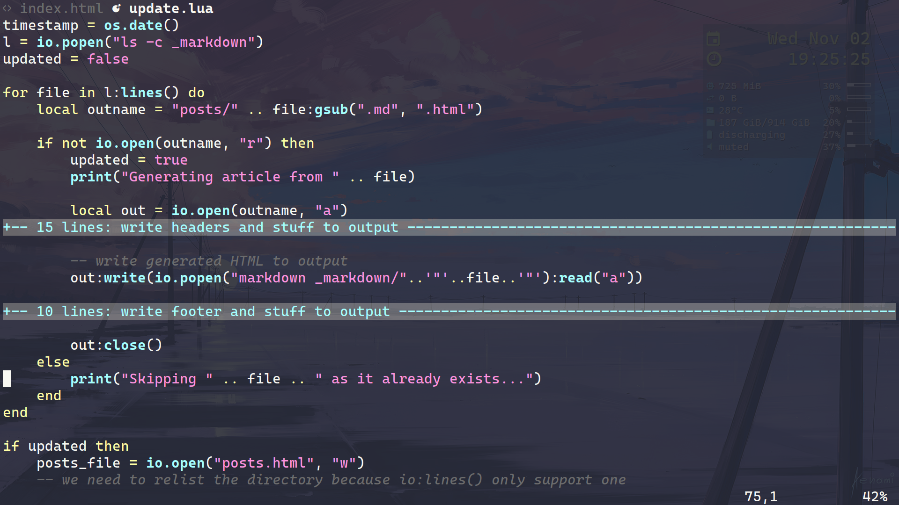

UwU, Hello!!
Here's my personal website! Know me more and access my other links:
Now, please allow me to introduce myself...
My name is Gabriel G. de Brito. I'm just a human trying to
become a good programmer. You can find me on
GitHub with the username gboncoffee.
Computing and programming
I like a variety of things in programming. To scripting, I like the Python language, which was the lang that made me like coding. But my favorite dynamic language is definitely Lua, because it's a fast and simple language that empowers me. I also like to study low-level a lot, so C is fun to me. Also, I'm currently learning Rust.
As of text editors, I like Vim and Neovim a lot. To improve my experience with them, I also like writing plugins in VimScript and Lua, which you can take a look at my GitHub profile.
Of course, nowadays everyone has to know a little of web programming! I know basic HTML and CSS and a little more JavaScript, but I prefer using CoffeeScript when programming to web.
Other languages that I like playing with are Julia and Haskell, as I like maths and the POSIX Shell, as I like scripting on my system.
As of OSes, I like Linux a lot and currently running Arch Linux (btw) as my system. I like tweaking it, so I use highly customizable programs like the Awesome window manager and the MPD music player. My configs are public at my GitHub, so you can use and help me improving them!
Besides that
Programming and maths are not everything! Besides that, I like camping and hiking with my scout group, playing volleyball, listening to music and playing the eletric guitar.
Definitely, after programming and maths, I like music a lot. Nowadays I'm a bit ecletic and listen from old classical composers like Tchaikovsky and Mozart to modern K-Pop groups like LOOΠΔ and BlackPink, but my all-time favorite style is Metal, with Metallica beeing my favorite band. It's also worthy to talk about BabyMetal, as I like cute things and they really mix kawaii idol and metal in a funny way and Hatsune Miku, as she is the perfect merge of music and technology!
On literature, I really like lusophone poetry, with Luís de Camões as my favorite writer. Sometimes I write a little, and you can read my texts here.
As of cinema, I really don't watch much movies and series, but I often watch animes.

